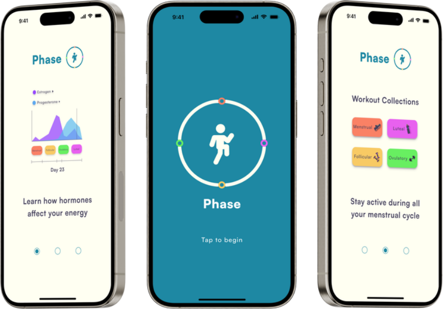

Phase
View PrototypeTrack and workout with Phase
Phase is a mobile app prototype designed for menstruating people, mainly under the age of 50, to help them achieve a healthier lifestyle by helping them maintain their regular activity levels throughout their menstrual cycle, providing insights about it, and relieving their symptoms.
I became part of a team to work on this prototype after a classmate, Sofia Torres, pitched the idea for Phase out of many other pitches students had to vote for. I was very interested in Phase and kept in mind that whoever I voted for would also be my team leader, so I believed in her vision and ability as a leader.
I built this app with four other students (Sofia Torres, Gavin Johns, Hannah Tingle, and Aysha Hardizi), for a school project following the process of Goal-Directed Design (GDD).

Overview
Most women who go through the menstrual cycle do not know they can better their health and mood through cycle-synced workouts. Phase was the solution to this issue, an app that provides cycle-synced workouts and provides insights about phases of the menstrual cycle.
Goal Directed Design
The design method my team used is Goal Directed Design which was created by Alan Cooper. Over the course of around eleven weeks we used this process to design Phase.

Research Phase
Literature Research
We sought to understand what workouts to pair with each phase of the cycle in Phase so we researched cycle syncing workouts with the menstrual cycle and how it affects the menstruating person in each phase and what workouts may be the most useful. We all went over separate articles and shared them with each other. I personally found that each phase of the cycle has a different effect on the woman’s emotions and energy levels which affect how active they want to be so they may choose to workout intensely during the ovulatory phase because their energy and mood are high but may want to go for a walk or stay in bed during the luteal phase because their energy and mood is low but keeping consistent with this pattern helps with facing each phase of the menstrual cycle.
Competitive Audit
We looked at the most used period tracking apps to understand our competition and found that they were Flo, Clue, and BetterMe.
We found that Phase’s competitors have:
- An extreme use of ads and paywalls
- Interfaces that are too limited
- Little to no focus on cycle-syncing workouts
- A loss of period data when transitioning to premium features
Persona Hypothesis
We believe that this app might have only one user type, but it can have different personas. The app can tailor its features, content, and user experience to address the unique needs and preferences of diverse users.
Interview Sessions
When looking for potential interviewees, we each reached out to students from multiple colleges as well as women from their early 20s to early 40's. We interviewed five candidates over one week. We interviewed a student at KSU, a student at UGA, a student studying nursing, and two middle-aged women. In these interviews, our teams asked the interviewees about their workout routines, their periods, if they knew anything about the phases of the menstrual cycle, and if they track their periods.
Affinity Maps
After collecting all the data from each map and individually taking notes on each interviewee, we used affinity maps. Here we gathered all our notes that we took on each interviewee and tried to find common subjects to categorize our notes under about the interviewee. Through this process, we found multiple similarities but also found some differences among each candidate. We found that four out of five interviewees were interested in learning about the phases of the menstrual cycle as well as cycle syncing workouts.


Modeling Phase
The Persona
We only had one persona pattern so Phase only had one persona. Our persona is comprised of someone who does not know much about the menstrual phases, works out, and would like to dive into pairing phases with workouts.

Identifying Behavioral Variables
At the beginning of the modeling phase, we used the notes gathered from the affinity maps and our notes observations from our user interviews to detect behavioral variables that the interviewees had in common.
This is what most of them had in common:
- Familiarity with menstrual phases (below somewhat familiar)
- Frequency in workout (most days)
- Would sync workouts with phases (somewhat likely to very likely)
- Uses fitness apps (yes)


Remodeling Phase
We readdressed our problem statement as well as created a vision statement for what we wanted the app to be, which was to achieve a healthier lifestyle by allowing them to regulate their activity levels throughout their menstrual cycle and provide insights about the menstrual cycle. Then we brainstormed what the app should be, what it will do, and what features it should have. Then we created a context scenario of a situation where our primary persona might use our app.
Frameworks Phase
We sketched out ideas for how the screens of our prototype would look before moving on to wireframes. I had proposed the idea of a chart that can be toggled to look at the different hormones and the team liked it. After individually proposing sketched ideas, our team leader, Sofia Torres, took the ones we agreed upon and put them into one big sketch for our wireframes. Then we put together our wireframe which was the base for what our prototype should ultimately look like.


Starting the Prototype
We readdressed our problem statement as well as created a vision statement for what we wanted the app to be, which was to achieve a healthier lifestyle by allowing them to regulate their activity levels throughout their menstrual cycle and provide insights about the menstrual cycle. Then we brainstormed what the app should be, what it will do, and what features it should have. Then we created a context scenario of a situation where our primary persona might use our app.
Refinements Phase
We were required to only do two usability tests but we did five, but were only able to reach out to one previous interviewee and the rest were new.
Results from tests:
- Trouble knowing when to click or swipe
- Trouble navigating to workout history and logged workout pages
- X buttons needed
Refinements based on the results:
- Made it clear when to click or swipe
- Added X buttons
- Made navigation clearer and easier
Final Prototype
We were required to only do two usability tests but we did five, but were only able to reach out to one previous interviewee and the rest were new.
Results from tests:
- Trouble knowing when to click or swipe
- Trouble navigating to workout history and logged workout pages
- X buttons needed
Refinements based on the results:
- Made it clear when to click or swipe
- Added X buttons
- Made navigation clearer and easier